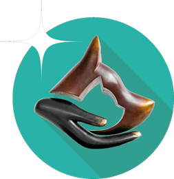

Une équipe à l'écoute pour la santé et le bien-être de votre compagnon, dans un cadre moderne et rassurant.
Nous n'appartenons à aucun groupe. Cette indépendance nous permet de garder une médecine à taille humaine, des choix libres dans l'intérêt de votre animal, et une relation de confiance directe avec vous.

Située au 1 rue des Cerisiers à Évrecy, la clinique VetAnimalia accueille vos animaux de compagnie dans un environnement moderne et apaisant. Consultations, chirurgie, imagerie, hospitalisation : nos vétérinaires et auxiliaires vous accompagnent à chaque étape de la vie de votre compagnon.
Les consultations se font exclusivement sur rendez-vous, et des plages horaires restent disponibles chaque jour pour les urgences.
Découvrir l'équipeConsultations de médecine générale et préventive pour chiens, chats et NAC.
En savoir plus →Interventions chirurgicales réalisées au sein de notre bloc dédié.
En savoir plus →Analyses réalisées sur place pour des résultats rapides et fiables.
En savoir plus →Conseils nutritionnels adaptés à l'âge et à l'état de santé de votre animal.
En savoir plus →Surveillance et soins intensifs des animaux hospitalisés.
En savoir plus →Suivi adapté aux animaux âgés pour préserver leur confort de vie.
En savoir plus →Gestion de la douleur, y compris par laser thérapeutique.
Réseau CAPdouleurContactez-nous, nous vous orienterons vers le service le plus adapté.
Nous contacterRetrouvez nos conseils pratiques pour accompagner votre animal au quotidien.
Les premiers gestes pour bien accueillir votre chiot.
Tout pour bien démarrer avec votre chaton.
Yeux, oreilles, soins bucco-dentaires : les bons réflexes.
Arthrose, atopie, diabète, épilepsie : mieux comprendre.
Une équipe de vétérinaires diplômés et d'auxiliaires spécialisées, formés en continu pour offrir à votre animal les meilleurs soins.
Diplômée de l'école vétérinaire de Maisons-Alfort, 1999.
Diplômée de l'école nationale vétérinaire de Nantes, 2008.
Diplômée de l'ENV de Nantes (2009), ancienne interne. Dentisterie GEROS (2022), CES hémato-biochimie (2010).
Diplômée de l'ENV de Nantes (2014), ancienne interne. Vétérinaire nutritionniste (2022).
Diplômée de l'école vétérinaire de Nantes, 2021.
Diplômé de l'école vétérinaire de Toulouse, 1976. Aujourd'hui retraité — un clin d'œil à celui par qui tout a commencé.
Les Auxiliaires Spécialisées Vétérinaires diplômées (accueil – infirmerie) se relaient pour vous accueillir, vous conseiller, aider lors des examens complémentaires et veiller aux soins et au confort des animaux hospitalisés.
Ouverture de la clinique — consultations sur rendez-vous uniquement.
Réservez en quelques clics grâce à notre service de prise de rendez-vous en ligne, ou contactez-nous directement à la clinique.
Prendre RDV en ligneDes plages horaires restent toujours disponibles pour les urgences. En cas de besoin, téléphonez-nous afin que nous puissions vous recevoir dans les meilleures conditions.